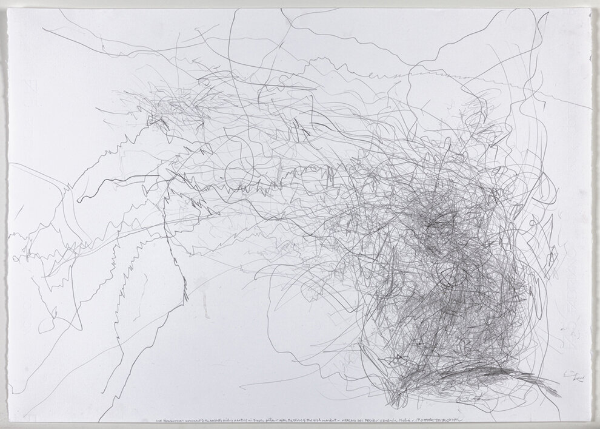

Drawing for Social Re-connectivity
SiX is a research project that uses digital drawing to help patients with Locked-in Syndrome (LIS) reconnect socially and express themselves.

EVENTS/ACTIVITIES
SiX will host workshops and presentations for students, researchers, and healthcare professionals. These events will focus on understanding LIS and its impact, raising awareness of the challenges faced by patients and their families. Additionally, they will explore the potential of digital drawing as a communication tool to facilitate communication and expression for LIS patients. Lastly, they will share insights into the design process and promote the development of accessible and inclusive technologies that meet the needs of people with disabilities.
SEE MORE